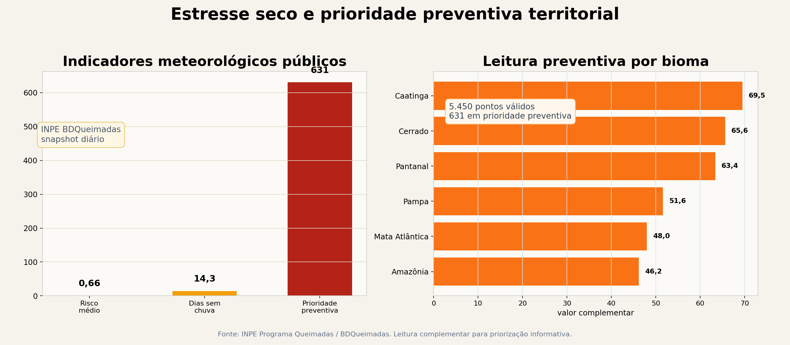

O que este estudo acrescenta
Os indicadores utilizados neste estudo já estão disponíveis em fonte pública oficial. A contribuição da análise complementar está na integração e organização territorial dessas informações, permitindo observar onde diferentes sinais meteorológicos se concentram e podem justificar acompanhamento preventivo.
Indicadores públicos observados
0,66
Risco médio de fogo nos pontos com dado meteorológico válido.
- Risco de fogo registrado no snapshot diário.
- Dias sem chuva associados aos pontos observados.
- Precipitação registrada como variável complementar.
Fonte pública: INPE Programa Queimadas / BDQueimadas.
Organização territorial complementar
631
Pontos agrupados em classe preventiva para análise complementar.
- Identificação de territórios com maior concentração de sinais preventivos.
- Organização de pontos para acompanhamento preventivo.
- Separação entre condição de risco, ocorrência observada e dano confirmado.
Pergunta adicional: quais territórios concentram sinais preventivos relevantes?
Painel quantitativo
O gráfico apresenta condição seca, risco médio e distribuição da leitura preventiva por bioma.

Indicadores públicos utilizados
| Snapshot | 2026-06-04 |
|---|
| Pontos válidos | 5.450 |
|---|
| Dias sem chuva médios | 14,3 |
|---|
| Risco médio | 0,66 |
|---|
| Classe preventiva | 631 pontos |
|---|
Fonte pública e escopo do estudo
O dado público utilizado é o snapshot diário do INPE Programa Queimadas / BDQueimadas, referente a 2026-06-04. Os indicadores observados são risco de fogo, dias sem chuva e precipitação.
A CaptaGeo não cria indicador oficial de risco de fogo. A análise complementar organiza esses pontos em contexto territorial para apoiar acompanhamento preventivo, comparação entre áreas e verificação contextual.
Como os indicadores foram organizados
A camada marrom mostra os indicadores meteorológicos públicos. A camada complementar organiza esses sinais em uma leitura preventiva territorial para facilitar comparação, contextualização e análise complementar.
Indicadores meteorológicos públicosDias sem chuva e risco de fogo indicam condição favorável ao fogo.
Leitura preventiva territorialOrganiza os pontos em ponto de atenção preventivo, ponto de atenção territorial ou observação complementar.
Matriz territorial
A matriz organiza indicadores meteorológicos públicos em uma leitura territorial comparável. O objetivo é apoiar a identificação de territórios com maior concentração de sinais preventivos, sem caracterizar ocorrência, dano, causa ou responsabilidade.
| Bioma | Pontos | Participação | Dias sem chuva | Risco médio | Destaque territorial | Pontos em classe preventiva |
|---|
| Caatinga | 75 | 1,4% | 24,2 | 0,77 | Alto destaque | 52 pontos em classe preventiva |
| Cerrado | 2.810 | 51,6% | 16,0 | 0,79 | Alto destaque | 505 pontos em classe preventiva |
| Pantanal | 220 | 4,0% | 14,8 | 0,76 | Alto destaque | 7 pontos em classe preventiva |
| Pampa | 77 | 1,4% | 3,4 | 0,71 | Destaque moderado | 0 pontos em classe preventiva |
| Mata Atlântica | 239 | 4,4% | 7,1 | 0,59 | Observação complementar | 3 pontos em classe preventiva |
| Amazônia | 2.029 | 37,2% | 12,8 | 0,48 | Observação complementar | 64 pontos em classe preventiva |
| Estado | Pontos | Participação | Dias sem chuva | Risco médio | Destaque territorial | Pontos em classe preventiva |
|---|
| PIAUÍ | 102 | 1,9% | 34,7 | 0,99 | Alto destaque | 95 pontos em classe preventiva |
| BAHIA | 122 | 2,2% | 21,5 | 0,98 | Alto destaque | 42 pontos em classe preventiva |
| DISTRITO FEDERAL | 4 | 0,1% | 15,0 | 0,99 | Alto destaque | 1 ponto em classe preventiva |
| TOCANTINS | 814 | 14,9% | 19,0 | 0,88 | Alto destaque | 203 pontos em classe preventiva |
| MATO GROSSO DO SUL | 106 | 1,9% | 12,9 | 0,97 | Alto destaque | 11 pontos em classe preventiva |
| SÃO PAULO | 76 | 1,4% | 11,6 | 0,97 | Destaque moderado | 0 pontos em classe preventiva |
| MINAS GERAIS | 193 | 3,5% | 14,3 | 0,89 | Destaque moderado | 47 pontos em classe preventiva |
| GOIÁS | 168 | 3,1% | 9,9 | 0,95 | Destaque moderado | 4 pontos em classe preventiva |
| MARANHÃO | 251 | 4,6% | 19,3 | 0,77 | Destaque moderado | 121 pontos em classe preventiva |
| ESPÍRITO SANTO | 1 | 0,0% | 5,0 | 0,96 | Observação complementar | 0 pontos em classe preventiva |
Pergunta adicional que este estudo permite observar
Os indicadores públicos respondem perguntas específicas sobre risco de fogo, dias sem chuva e precipitação. A leitura territorial apresentada neste estudo busca responder uma pergunta adicional: quais territórios concentram maior volume relativo de sinais preventivos e podem justificar análise complementar?
Leitura aplicada
Risco de fogo, dias sem chuva e precipitação funcionam como sinais de atenção preventiva. A leitura organiza esses indicadores por território para apoiar verificação contextual, acompanhamento complementar e revisão contextual.
O estudo demonstra que indicadores meteorológicos públicos podem ser organizados em uma leitura territorial preventiva. A contribuição da CaptaGeo está em transformar sinais dispersos de condição seca em uma visão comparável por território, apoiando a identificação de áreas que podem justificar acompanhamento complementar.
Fonte: snapshot real do INPE BDQueimadas, referente a 2026-06-04.
Aplicar leitura preventiva em áreas monitoradas
A CaptaGeo transforma indicadores meteorológicos públicos em uma visão territorial para acompanhamento preventivo e revisão contextual.